【補足】 C(conclusion、結論)：分析結果の考察、結論
データ分析を進める上で、データの可視化や統計量の確認の重要度はこれまででわかりました。 データ分析を援助するツールである BI ツールの基礎的な使用方法について紹介します。
Power BI を使用した可視化
Power BI は関連性のないデータソースを一貫性のある視覚的にイマーシブでインタラクティブな洞察に変えるために、連携して動作するソフトウェア サービス、アプリ、コネクタのコレクションです。データがシンプルな Microsoft Excel ワークブックであっても、クラウドベースおよびオンプレミスのハイブリッド データ ウェアハウスのコレクションであっても、Power BI を使用すると、データソースに簡単に接続して、基になるソースに影響を及ぼすことなく、データをクリーンアップおよびモデル化したり、重要なデータを可視化
(または発見) したり、あらゆる必要なユーザー全員とデータを共有したりできます。 PowerBI は可視化ツールとしての認識が強いですが、可視化以外にも分析などを行うことが可能です。 
Power BI は、Power BI Desktop と呼ばれる Microsoft Windows デスクトップ アプリケーション、Power BI サービスと呼ばれるオンライン SaaS (サービスとしてのソフトウェア) サービス、および携帯電話やタブレットで使用できるモバイル Power BI アプリ(PowerBI Mobile) で構成されます。
Power BI の使用手順 使用手順は下記の通りです。

Power BI Desktop にデータを取り込み、レポートを作成します。
Power BI サービスに発行して、新しい視覚エフェクトを作成したり、ダッシュボードを作成したりできます。
他のユーザー、特に外出先のユーザーとダッシュボードを共有します。
Power BI Mobile アプリで共有ダッシュボードおよびレポートを表示および操作します。
例えば、工場などでリアルタイムなデータを取得しそれを常に携帯などの IOT デバイスで確認することが可能です。 Power BI Desktop は Windows のみの提供のため、Mac をご利用の方は Web 版を使用してください。
PowerBI の実装
BI ツールを使用しデータから新たな傾向を見つけ出しましょう。
Power BI Desktop もしくは Power BI (Web) を開いてください。 Desktop と Web 版でデータの取得の方法が異なるので注意してください
Power BI Desktop のセットアップ
Exel からデータの読み込みを行い、実装を行う準備をします。まずは Power BI Desktop を起動させてください。 こちらのファイル使用してください。
ホーム画面からデータの取得を選択しダウンロードしたデータを選択してください。
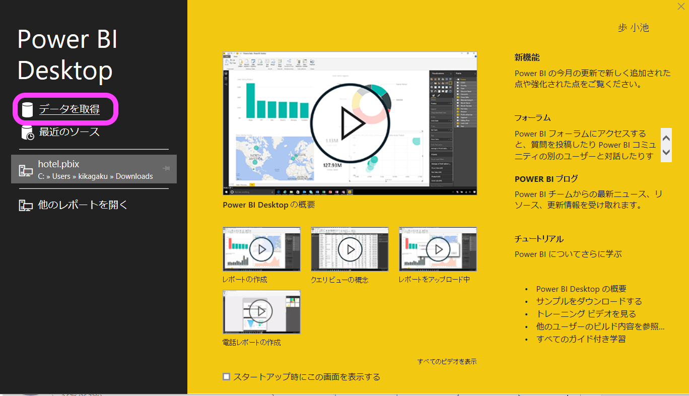
データにチェックをいれて読み込みをクリックしてください。
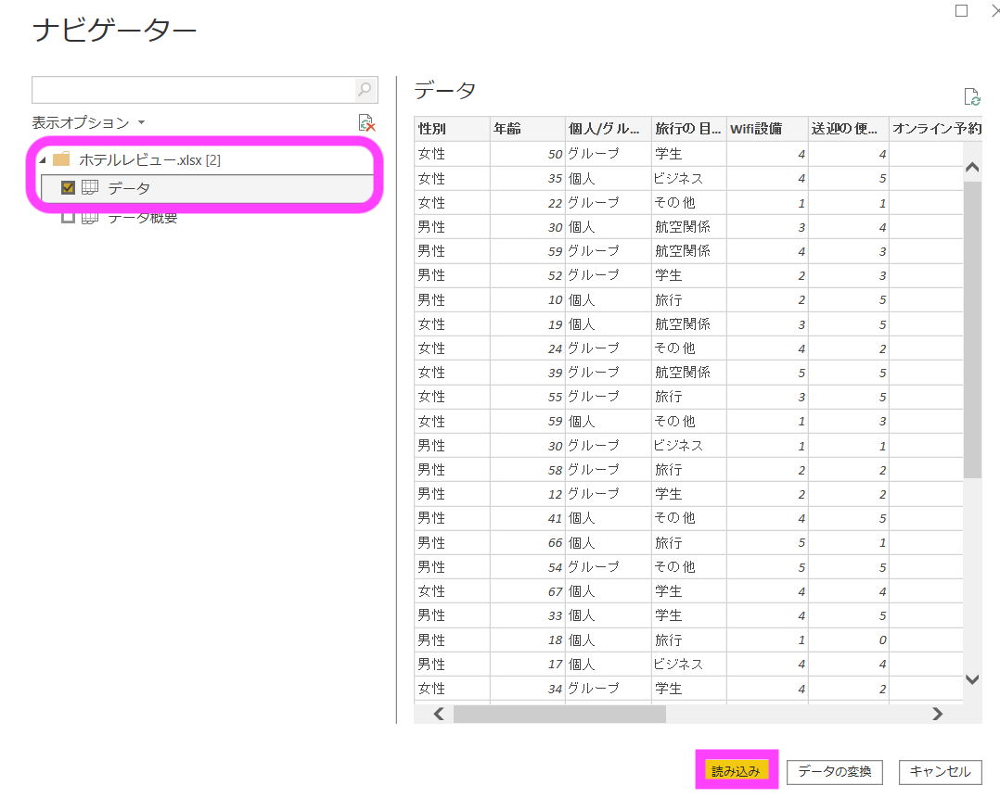
読み込みが完了すると画像のようにフィールドに変数が表示されます。こちらのワークスペースを使用し実装を行います。
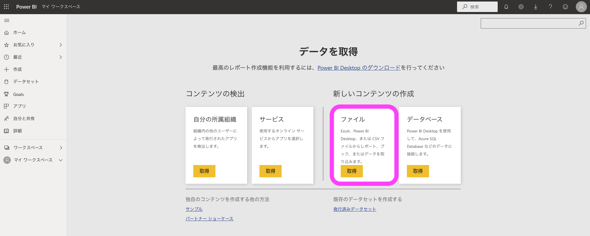
データの可視化から実装を行います。
Power BI(Web) のセットアップ
ホーム画面にてデータの取得先を選択できます。 Exel からのインポートも可能ですが実務では Desktop 版で作成された .pbix のファイルを読み込むことが一般的ですので下記ファイルをダウンロードしてください。
データのダウンロードが完了しましたら、Power BI にデータのアップロードを行います。 Power BI を開いていただき、データの取得をクリックしてください。
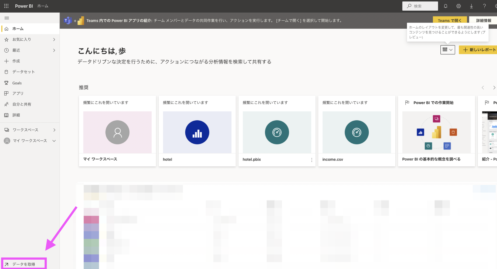
ファイルを選択してください。先程ダウンロードをしました、bi_hotel.pbix を選択しアップロードしてください。 
画像のようにレポートとデータセットの表示がされてましたら完了です。 次にレポートを選択してください。 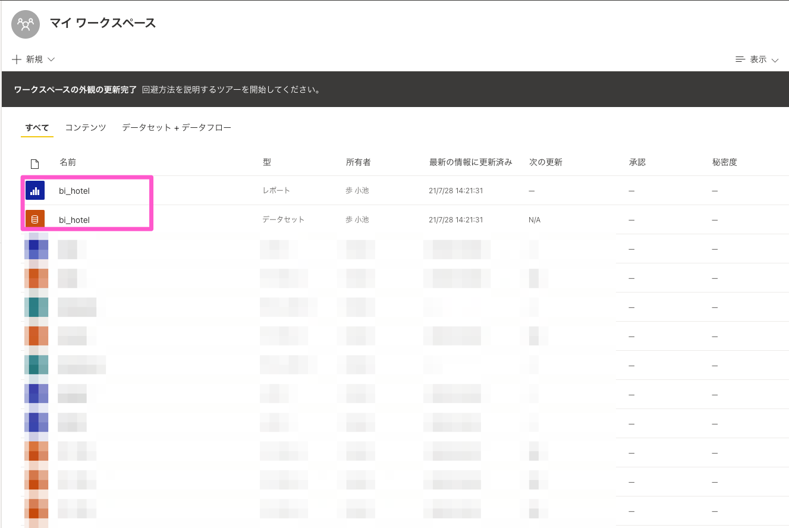
すると画像のような画面に遷移しますので編集を押してください。
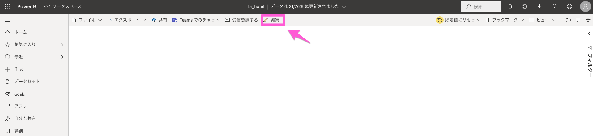
すると Workspace を開くことができます。 データを見てみるとホテルレビューの分析で使用したものと同じカラムが入っていることが確認できます。こちらでデータの可視化の実装を行います。
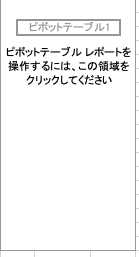
データの可視化
こちらからの操作は Power BI Desktop, Power BI どちらを使用している方も同様となります
円グラフ
それでは Power BI を使用してデータの可視化を行います。 満足度の割合を確認します。視覚化ウィンドウから円グラフを選択します。 すると画像のように表示がされます。この時点ではどのようなデータを表示させるのか定義をしていないので画像のような形になります。
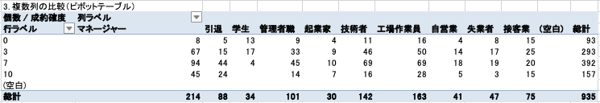
次に表示させるデータを選択します。満足度を選択し値の部分に挿入てください。 すると画像のように表示されます
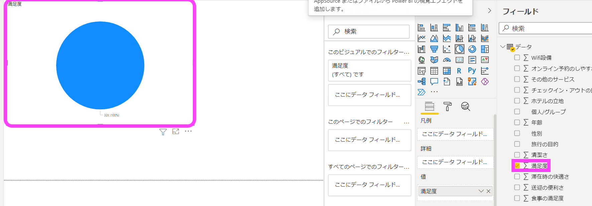
これでは割合を確認することができません。 値の表示方法を変更します。値の満足度をクリックしてください。
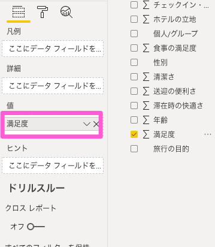
カウントにチェックいれます。
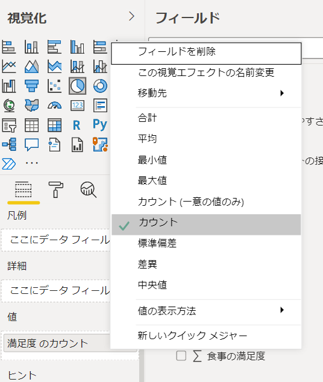
その後凡例に満足度をドラッグ・アンド・ドロップし、再度表示を確認します。
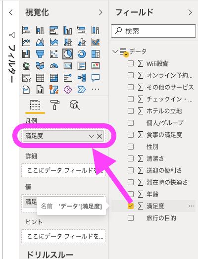
すると下記のように満足度の 1~5 のアンケート結果の割合を表示させることができました。
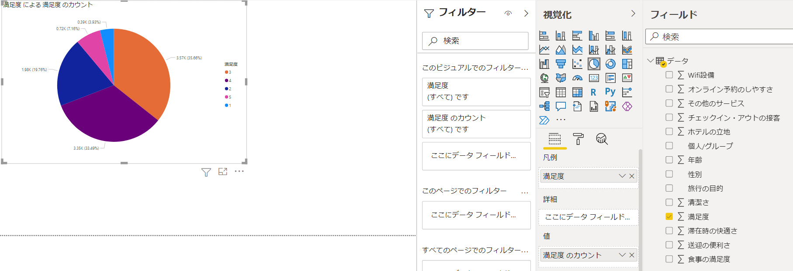
ヒストグラム
次に Wifi 設備を Exel で実装した際と同じように可視化します。 視覚化ウィンドウから積み上げ縦棒グラフを選択してください。
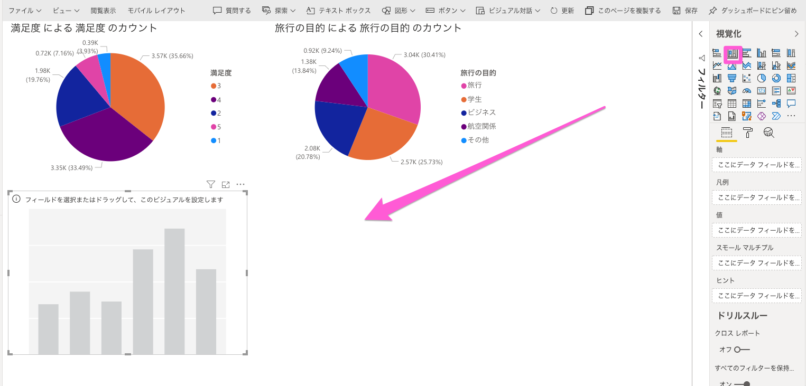
ヒストグラムを整形するために必要な軸、凡例、値の情報を受け渡します。 凡例は値を渡さなくても実装できますがより理解しやすくするために入力をしています。3つの変数を使用し可視化をして分析を行う際にも有効です。
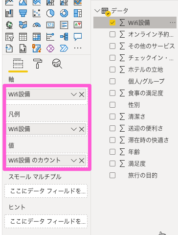
正しくデータが渡されると画像のように可視化を行うことができます。
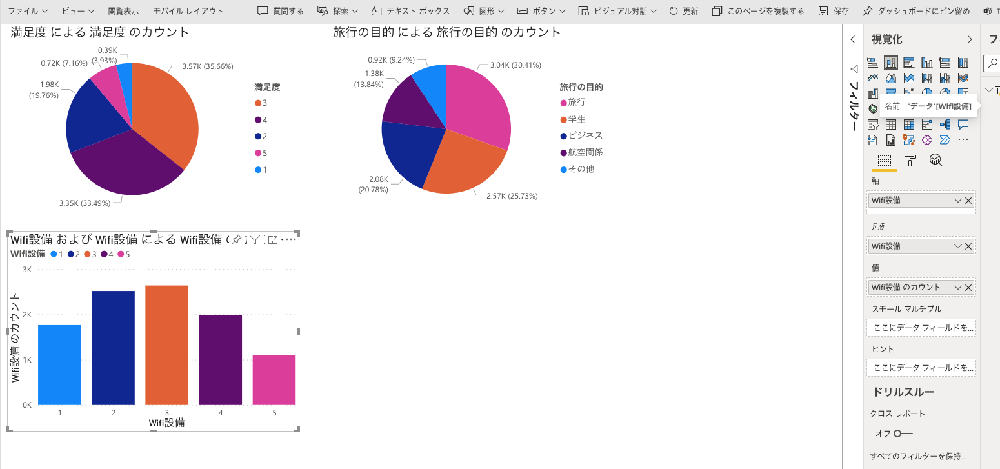
次に 2 つの変数を使用し可視化を行います。 満足度とホテルの立地の平均値を可視化します。 再度ヒストグラムを選択してください。軸、凡例、値には下記を入力してください。
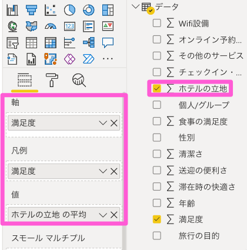
こちらが可視化結果です。
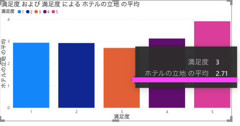
満足度の低いお客様はホテルの立地に対する評価も満足度5の平均と比べると低い傾向がありますが、満足度に関しまして 1,2,3 をつけたお客様のなかで3をつけたお客様がホテルの立地に対する平均の評価が最も低いという結果でした。
満足度に反してホテルの立地への評価が高いことからお客様へのサービスが十分でない可能性が考えられる。データにはないが、ホテルの稼働率などを見ることによって従業員が足りていないなどの原因を特定できる。
3 をつけたお客様はホテル選びの際に立地をある程度重視していたが期待していたほどのホテル立地ではなかった可能性があり、そのためホテルに来られる前からネガティブな印象をお持ちであったかもしれない。立地が満足度が向上しない要因である可能性がある。
１例ではありますが上記のような仮説や考察をたてることができます。
PowerBI を用いた高度な分析
ここまで基礎的な Power BI の実装方法についてご紹介いたしました。 他にも Power BI ではデータの説明の補助、分析の補助をするためのツールがありますのでそちらについてご紹介致します。
主要なインフルエンサー
主要なインフルエンサーは、関心のある変数（ホテルのレビュー）を動作させる要因を理解するのに役立ちます。 データを分析し、重要な要因にランクを付け、主要なインフルエンサーとして表示します。重回帰などのデータ分析を行ったことがない方でも簡単に重要度を可視化できる便利なツールです。 便利な反面、ブラックボックスな要素が多く、重要度を算出する上でどのような分析手法や計算を行ったのかがわかりません。 視覚化ウィンドウから主要なインフルエンサーを選択します。
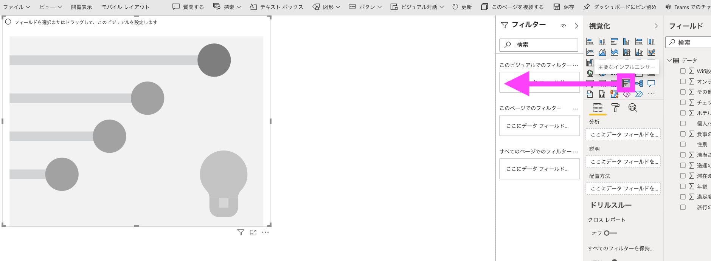
分析を行う対象は満足度なので画像のようにします。 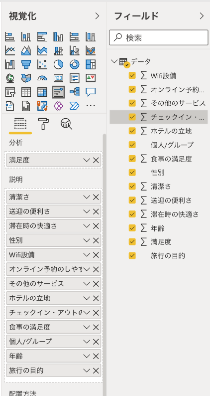
分析後の重要度です。
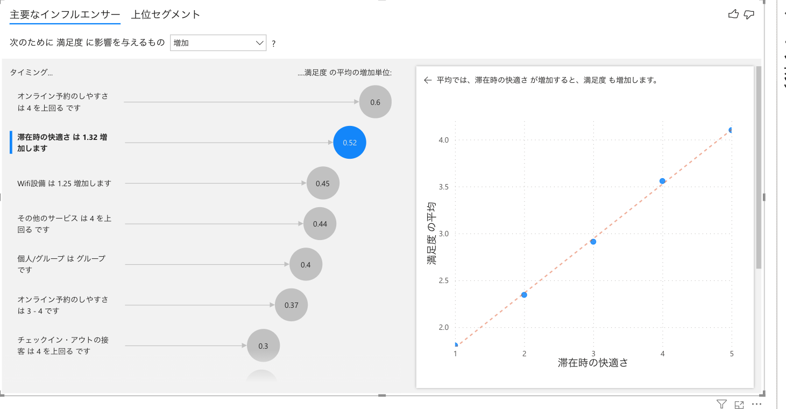
こちらは滞在時の快適さが 1.32 上昇すると満足度に対しても 0.52 の上昇が見られるということを表しています。 表示を変えることで満足度が下がってしまう要因の特定を行うことも可能です。使用されている分析手法のの詳細等はこちらこちらをご確認ください。
ツリー
ツリーは集計された値を任意の順序で探索することができます。アドホック探索や根本原因分析に役立つツールになります。 データサイエンスの知識がなくてもデータの深堀りを行い、メトリックの要因の特定を行うことが可能です。詳細はこちらをご確認ください。
視覚化ウィンドウから分解ツリーを選択します。
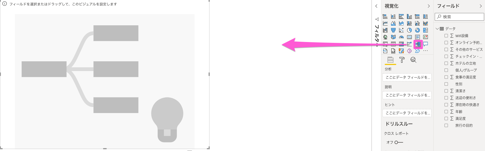
次に分析に使用するメトリックを決めます。今回は満足度の平均値に注目をし、立地の悪いホテルでも高い満足度を得ることが可能かどうかを検証します。使用する変数はホテル立地、wifi満足度、食事満足度です。 tree1.png
画像のようにホテル立地に対して最低点の1の評価をつけたお客様でもwifiや食事といったサービスを充実させることによって平均以上の満足度を得ることが可能です。
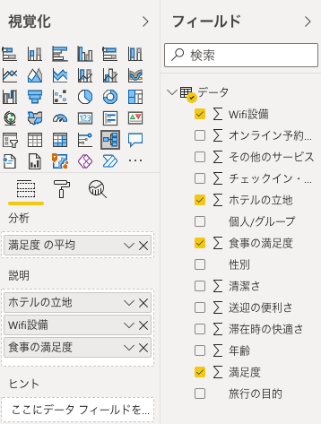
また、実務で考えますと新しいホテルを建設する際に、立地の良いところに建設すべきなのかそれとも建設予算を押さえてその他のサービスに力を入れるべきなのかなど、様々な場面でのビジネス上の意思決定においても活用が可能です。
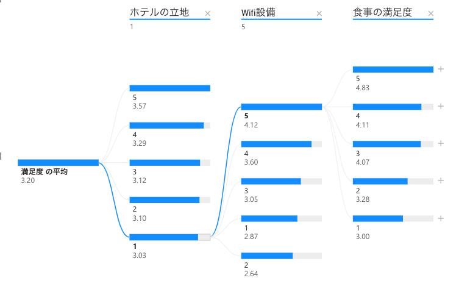
ここまで Power BI の基礎的な使用方法と活用場面について解説を行いました。データサイエンスだけではなく、意思決定を行う際の説明ツールとしても使用可能ですのでぜひ使用してください。
時間のある方は、講座内で使用した Bank データを使用し、試行錯誤を行ってみてください。